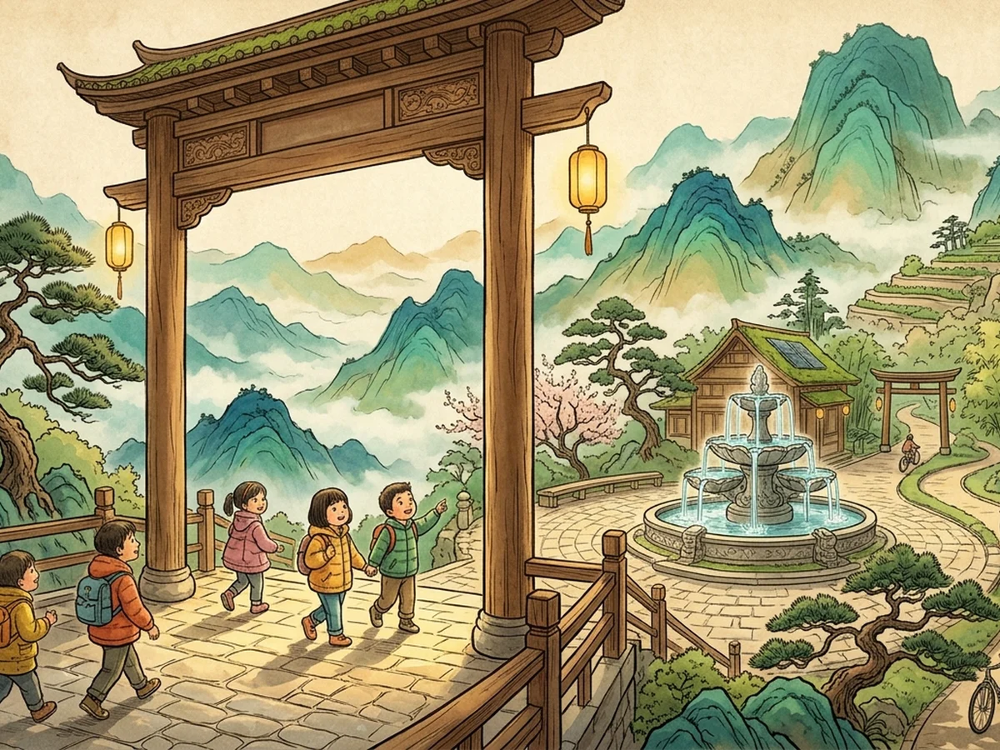

迎賓廣場 · Welcome Plaza · 2,200m
Print Output + Intention
Stepping through the cedar front gate with clear greeting code, students replace autopilot with curious purpose.
Rainwater Fountain · Bicycle Paths · Green Buildings